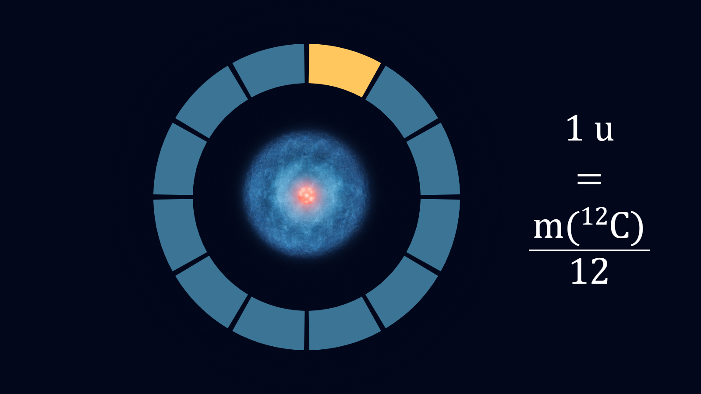
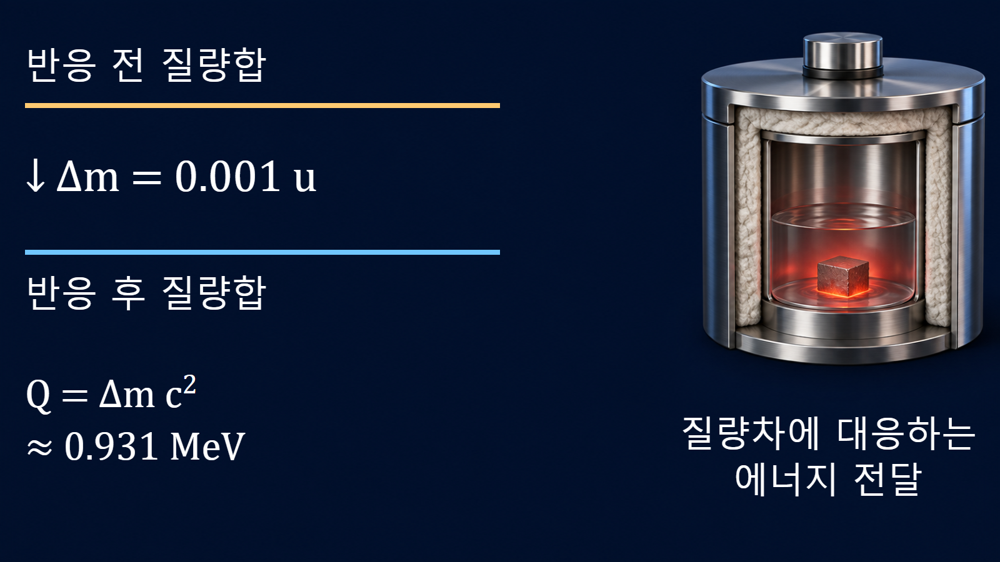

원자와 원자핵의 기초 · 006
원자질량단위 u
원자 한 개의 질량을 다루는 공통 눈금
통일원자질량단위 u는 바닥상태의 중성 탄소-12 원자 질량을 정확히 12등분한 값입니다. 질량수처럼 핵자의 개수를 세는 정수가 아니라 실제 질량을 나타내는 단위이며, 핵반응에서는 작은 질량차를 에너지로 환산하는 데 사용합니다.
탄소-12로 정한 원자 질량의 기준
1 u는 자유롭고 정지한 바닥상태의 중성 탄소-12 원자 질량의 12분의 1로 정의합니다. CODATA 2022 평가값으로 환산하면 약 1.660 539 068 92×10−27 kg입니다. 원자 한 개의 질량을 kg으로만 쓰면 매우 작은 지수를 계속 다뤄야 하지만, u를 사용하면 양성자와 중성자는 약 1 u, 전자는 약 5.49×10−4 u로 비교할 수 있습니다.

질량수와 실제 원자질량의 구분
질량수 A는 원자핵 안의 양성자수 Z와 중성자수 N을 더한 입자 개수 A=Z+N이며 단위가 없습니다. 반면 원자질량은 질량분석 등으로 얻는 물리량이므로 u 단위를 사용하고 일반적으로 정수가 아닙니다. 핵자가 결합할 때 에너지가 방출되면 결합된 원자핵의 질량이 자유 핵자 질량의 합보다 작아지기 때문입니다. 따라서 우라늄-235의 ‘235’는 질량수이지 그 원자의 정밀질량이 정확히 235 u라는 뜻이 아닙니다.
| 구분 | 의미 | 계산에서의 용도 |
|---|---|---|
| 질량수 A | 양성자와 중성자의 총개수 | 핵종 식별과 핵자 장부 |
| 원자질량 | 전자까지 포함한 중성 원자의 질량 | 질량분석·반응 Q값 |
| 핵질량 | 전자를 제외한 원자핵의 질량 | 핵모형과 반응 계산 |
산소-16 한 원자의 kg 환산
입문 계산에서 산소-16 원자질량을 16 u로 근사하면 16×1.66054×10−27 kg/u=2.66×10−26 kg입니다. 이때 u가 약분되고 kg이 남는지 먼저 확인합니다. 정밀 계산에서는 16이라는 질량수를 그대로 사용하지 않고 평가된 산소-16 원자질량을 적용합니다. 근삿값과 정밀값을 구분하면 개념 설명의 편의와 실제 핵자료 계산을 혼동하지 않을 수 있습니다.
질량차 0.001 u의 에너지 환산
질량과 에너지의 관계 E=mc2에 따라 1 u·c2≈931.494 MeV입니다. 반응 전후 질량차가 0.001 u라면 방출 가능한 에너지는 약 0.931 MeV입니다. 먼저 반응물과 생성물의 질량을 모두 중성 원자질량 또는 모두 핵질량으로 통일하고, 전자 수와 방출입자를 포함해 질량 장부를 맞춥니다. 이후 질량차의 부호가 발열반응 또는 흡열반응의 해석과 일치하는지 확인합니다.

연료 재고와 핵자료에서의 활용
연료 질량을 원자 개수로 바꾸려면 g 단위의 질량을 핵종별 몰질량으로 나누고 아보가드로상수를 곱합니다. 핵반응 Q값을 구할 때에는 평가된 원자질량 또는 질량초과 자료를 사용합니다. 이 두 계산은 모두 u를 거시적인 질량과 미시적인 반응에너지 사이의 연결 단위로 활용하지만, 필요한 정밀도는 서로 다릅니다. 재고의 개략값에는 반올림한 몰질량을 사용할 수 있으나 반응 문턱과 붕괴 가능성을 판단할 때에는 충분한 자릿수의 평가질량이 필요합니다. 사용한 핵자료의 평가판, 질량 정의와 기준 상태도 계산 기록에 남겨야 다른 사람이 같은 결과를 재현할 수 있습니다.
계산 오류를 줄이는 확인 순서
첫째, 입력값이 질량수인지 원자질량인지 확인합니다. 둘째, 원자질량과 핵질량을 섞지 않습니다. 셋째, u에서 kg 또는 MeV로 바꿀 때 변환계수의 방향과 단위 약분을 적습니다. 넷째, 중간 단계에서 반올림하지 않고 마지막 결과에서 입력자료의 유효숫자에 맞춥니다. 다섯째, 결과가 원자질량 약 10−27~10−25 kg, 핵반응 에너지 keV~MeV 규모인지 비교하여 지수 오류를 점검합니다.
핵심 정리
u는 탄소-12로 정의한 실제 질량의 단위이고 질량수는 핵자 개수를 나타내는 정수입니다. 두 개념을 분리하고 원자질량·핵질량의 경계를 일관되게 유지해야 원자 개수, 질량결손, 결합에너지와 반응 Q값을 정확하게 계산할 수 있습니다.